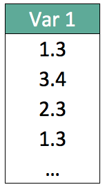
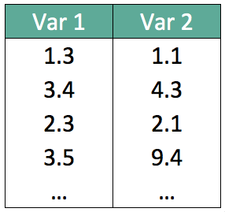
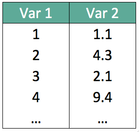
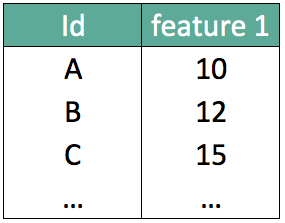
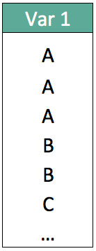

import numpy as np
import pandas as pd
import matplotlib.pyplot as plt #canonical importSéance 7 — Data visualisation
Introduction à Python · L3 Économie-Gestion
Objectifs
- Savoir tracer un graphique simple avec
matplotlib - Connaître les cas d’usage des graphiques les plus courants (lineplot, barplot, scatterplot, histogramme, boxplot)
- Savoir tracer ces graphiques avec
pandasouSeaborn - Savoir personnaliser lgèrement un graphique avec
matplotlib
Tracé élémentaire avec matplotlib : relier des points entre eux
Matplotlib
Pour tracer des graphiques simples, on utilise en général le module pyplot de matplotlib.
Tracé élémentaire
Pour un graphique simple on a la syntaxe plt.plot(x, y).
On doit fournir séparément (⚠️) :
- une liste d’abscisses
x, des points à tracer ; - et une liste de leurs ordonnées
y
Matplotlib adapte ensuite automatiquement le tracé et les échelles.
Tracer une fonction mathématique
Pour tracer la fonction \(f(x) = 2x + e^x\), avant d’utiliser matplotlib, on utilise NumPy:
- on crée un
arraypour les abscisses (x) - on calcule un
arraypour les ordonnées (y)
Superposer plusieurs graphes
On peut superposer plusieurs graphes sur la même figure.
💡 Ici, on a une figure, qui contient 2 lineplots
NB: Dans JupyterLab, le plt.show() est facultatif.
Data visualization avec pandas
Choisir le bon graphique
🤓 S’il n’y avait qu’une seule idée à retenir en Data Vizualisation :
c’est le type de données que l’on veut afficher qui détermine le type de graphique.
Reprenons les données du dataset titanic vu dans les TDs précédents.
| PassengerId | Survived | Pclass | Name | Sex | Age | SibSp | Parch | Ticket | Fare | Cabin | Embarked | |
|---|---|---|---|---|---|---|---|---|---|---|---|---|
| 0 | 1 | 0 | 3 | Braund, Mr. Owen Harris | male | 22.0 | 1 | 0 | A/5 21171 | 7.2500 | NaN | S |
| 1 | 2 | 1 | 1 | Cumings, Mrs. John Bradley (Florence Briggs Th... | female | 38.0 | 1 | 0 | PC 17599 | 71.2833 | C85 | C |
| 2 | 3 | 1 | 3 | Heikkinen, Miss. Laina | female | 26.0 | 0 | 0 | STON/O2. 3101282 | 7.9250 | NaN | S |
Deux grandes catégories de variables :
- Numérique :
Age,Fare,Parch, … - Catégorielle :
Sex,Pclass,Survived, …
Une colonne numérique
📝 Si les données ressemblent à…

➡️ On trace une distribution :
Histogramme ⚠️ ≠ diagramme en bâtons
ou Boxplot (boîte à moustaches)

Une colonne numérique : exemple
❓ Comment se répartissent les âges ?
| Age | |
|---|---|
| 0 | 22.0 |
| 1 | 38.0 |
| 2 | 26.0 |
…
👉 Histogramme
⚠️ Dans un histogramme la donnée en abscisse est continue. On compte combien il y a de valeurs : les bâtons regroupent les valeurs en paquets (les classes \(c_i\), cf. Statistiques Descriptives L1).
Deux colonnes numériques
📝 Si les données ressemblent à…

Les deux colonnes numériques sont désordonnées…
➡️ On trace un scatterplot (nuage de points) :
📝 Si les données ressemblent à…

Une colone est ordonnée…
(notion d’évolution d’une colonne en fonction de l’autre)
➡️ On va relier les points et on trace un lineplot :
Deux colonnes numériques : exemple (1/2)
❓ Existe-t-il une relation entre le prix du billet et l’âge ?
| Age | Fare | |
|---|---|---|
| 0 | 22.0 | 7.2500 |
| 1 | 38.0 | 71.2833 |
| 2 | 26.0 | 7.9250 |
…
Deux colonnes numériques : exemple (2/2)
❓ Quelle est la courbe de la fonction \(f(x) = x^2\) entre -10 et 10 ?
| x_values | y_values | |
|---|---|---|
| 0 | -10.00 | 100.00 |
| 1 | -9.80 | 96.00 |
| 2 | -9.60 | 92.08 |
| 3 | -9.39 | 88.25 |
| 4 | -9.19 | 84.49 |
| 5 | -8.99 | 80.82 |
| 6 | -8.79 | 77.23 |
| 7 | -8.59 | 73.72 |
| 8 | -8.38 | 70.29 |
| 9 | -8.18 | 66.94 |
…
Une colonne catégorielle et une colonne numérique
📝 Si les données ressemblent à…
NB : Il y a une seule valeur numérique associée à chaque catégorie.

➡️ On trace un barplot (diagramme en bâtons) :
⚠️ Ce n’est pas un histogramme : on n’a pas de données continues en abscisses.
Une colonne catégorielle et une colonne numérique : exemple
❓ Les femmes ont-elles plus survécu que les hommes ?
| Survived | |
|---|---|
| Sex | |
| female | 0.754789 |
| male | 0.206278 |
Une colonne catégorielle
📝 Si les données ressemblent à…

➡️ On trace un countplot :
C’est un barplot où les hauteurs des barres représentent le nombre d’occurences de chaque catégorie.
Une colonne catégorielle : exemple
❓ Combien y-a-t-il de passagers par classe ?
| Pclass | |
|---|---|
| 0 | 3 |
| 1 | 1 |
| 2 | 3 |
…
Data visualization avec Seaborn
Importer Seaborn
Pour des graphiques plus évolués en Analyse de Données, on utilise en général la librairie Seaborn, et on l’importe après matplotlib.
Graphiques vus précédemment
On peut faire la majorité des graphes déjà vus.
Graphiques plus complexes avec Seaborn
💡 Contenu non exigible à l’examen
Personnaliser un graphique avec Matplotlib
Titres
Matplotlib est compatible avec les graphiques créés avec Pandas ou Seaborn.
💡 Le principe : ajouter des instructions après la création du graphique {.tiny-slide}
Anatomie d’une figure

👉 La documentation de Matplotlib propose de nombreux exemples : Matplotlib — Pyplot tutorial.
Couleurs
Certains paramètres sont liés au tracé, et pas à la figure dans son ensemble. Il faut donc les ajouter dans le .plot().
Pour les couleurs, on peut utiliser celles de matplotlib ou un code HTML (commençant par #).
Légende
On peut préciser les etiquettes dans l’ordre, et la position de la légende.
Styles de traits, marqueurs, et taille de la figure
Grille, limites et ticks
Axes latéraux (spines)
Il y a 4 spines au total… et on peut choisir de les masquer.
Aller plus loin
💡 Contenu non exigible à l’examen
Il existe plein de types de graphiques..
… mais la question au départ est toujours la même :
À vous de jouer
Faire le TD 7
Introduction à Python — L3 Économie-Gestion